These views document the current authored Blender meshes and skins. Gameplay and device acceptance remain pending.
Blue sea star
Linckia laevigata
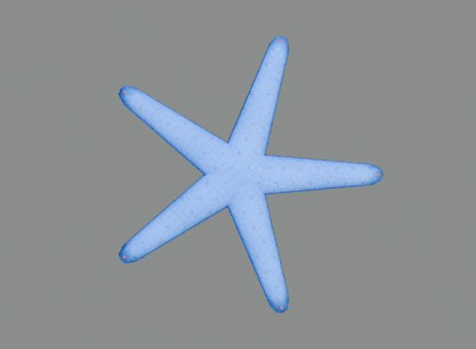
Dorsal
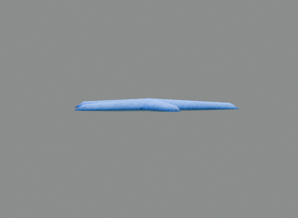
Side
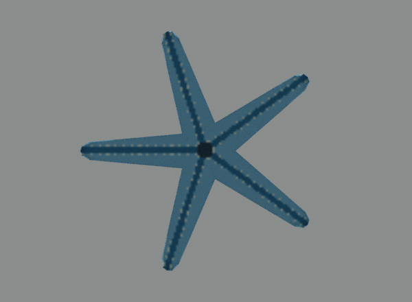
Oral
1 animal(s) · 18 cm · Player
Cobalt-blue skin, long rounded arms and a small red eyespot at each tip. The oral face has five grooves converging on the central mouth.
Planned behaviour. Any arm can lead. The player glides over sand, climbs all four glass walls and performs a two-second Reach. Idle and Dream driving share an autopilot route.
Blender objects: BlueStar
Chocolate-chip star
Protoreaster nodosus
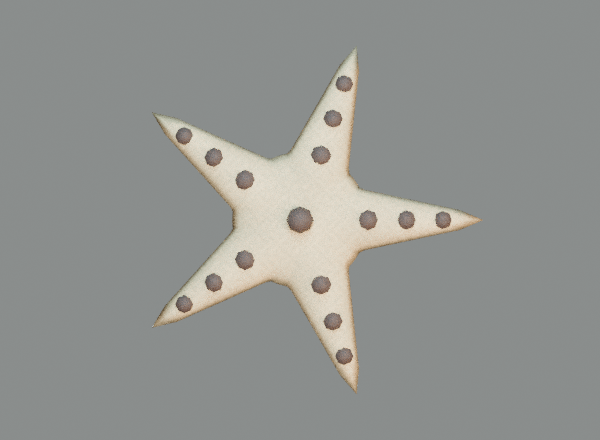
Dorsal
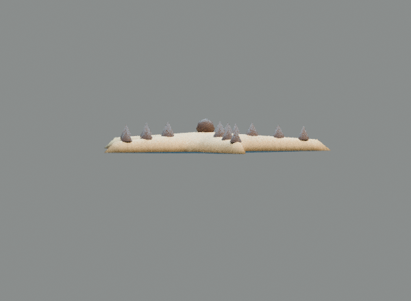
Side
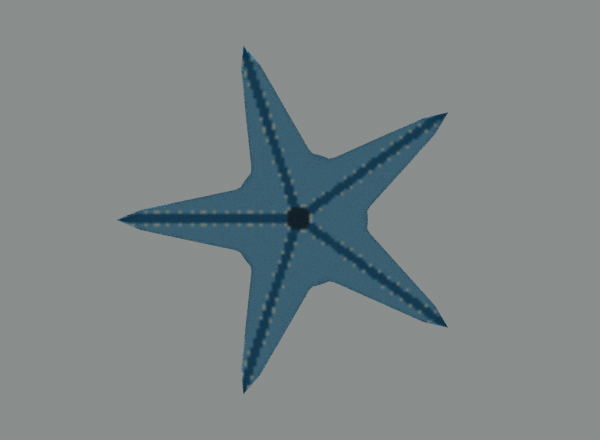
Oral
2 animal(s) · 20 cm · Resident
Broad tan disc, thick tapered arms and dark raised knobs. The knobs are part of the 3D mesh, giving the species a distinct profile.
Planned behaviour. Wanders between grazing spots on the open sand, with long rests between short journeys. Its heavier silhouette contrasts with the slender blue player.
Blender objects: ChipOne / ChipTwo
Red Fromia
Fromia milleporella
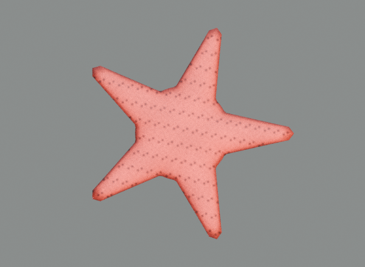
Dorsal
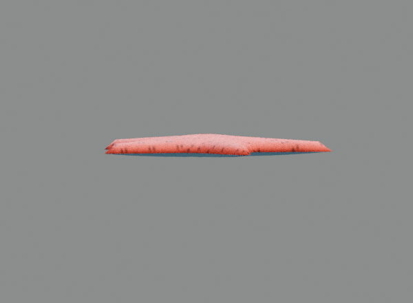
Side
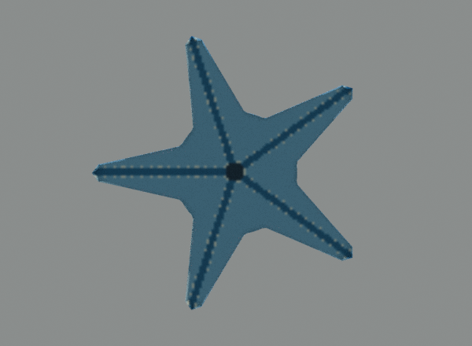
Oral
3 animal(s) · 8 cm · Resident
Small red star with tapered arms and fine dark pores. Three individuals punctuate the bare rock outcrops with warm colour.
Planned behaviour. Creeps along authored routes on the rock faces. These routes are prepared with the assets; the player’s free rock climbing remains outside the level’s scope.
Blender objects: FromiaOne / Two / Three
Sand-sifting star
Archaster typicus
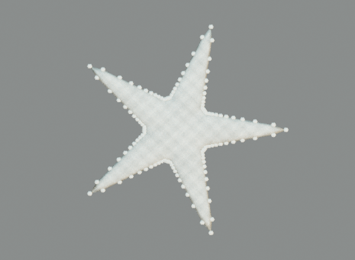
Dorsal
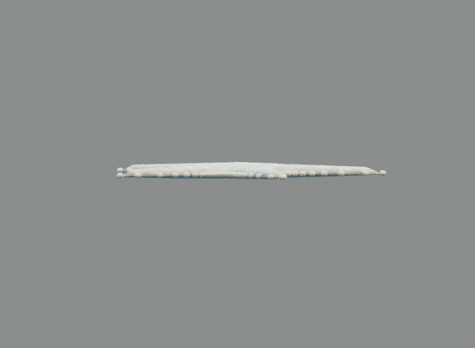
Side
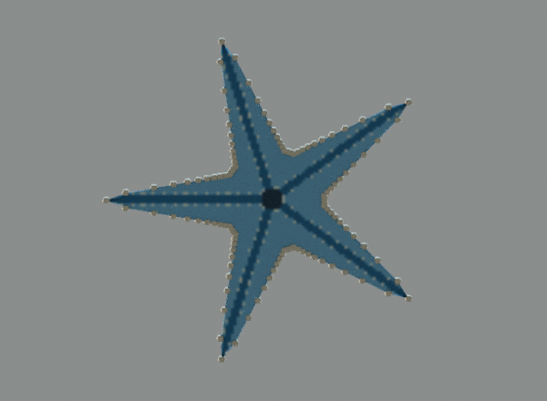
Oral
2 animal(s) · 11.2 cm · Resident
A flattened grey-tan body with slender arms and pale marginal plates. Its low profile lets the whole animal disappear beneath the sand.
Planned behaviour. Alternates between burial, emergence and short glides across the sand. Player contact is designed to trigger a quicker retreat beneath the surface.
A 3.8 cm disc carries five tapering, segmented arms, each 15 cm long. The arms form different S bends and hooked curls, with small lateral spines and muted bands.
Planned behaviour. Rests with sinuous arms partly curled around its refuge. During escape, the middle arm segments row while the distal portions remain flexible and can lift from the substrate.
Blender objects: Brittle
Cushion star
Culcita novaeguineae
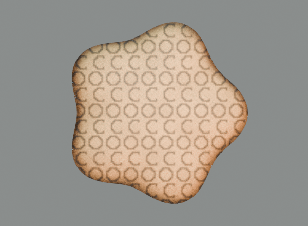
Dorsal
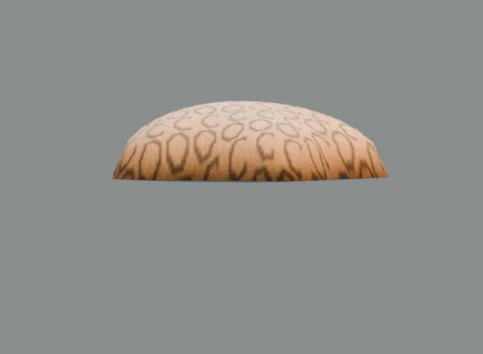
Side
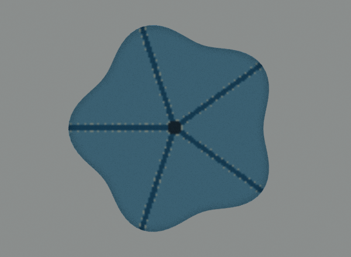
Oral
1 animal(s) · 14.4 cm · Resident
A thick, rounded pentagon with almost no projecting arms. Warm orange-brown skin carries an irregular darker net pattern.
Planned behaviour. Remains almost stationary. A gentle vertical puff provides a contrasting animation; the puff is approved stylization rather than a claim about the animal’s breathing.